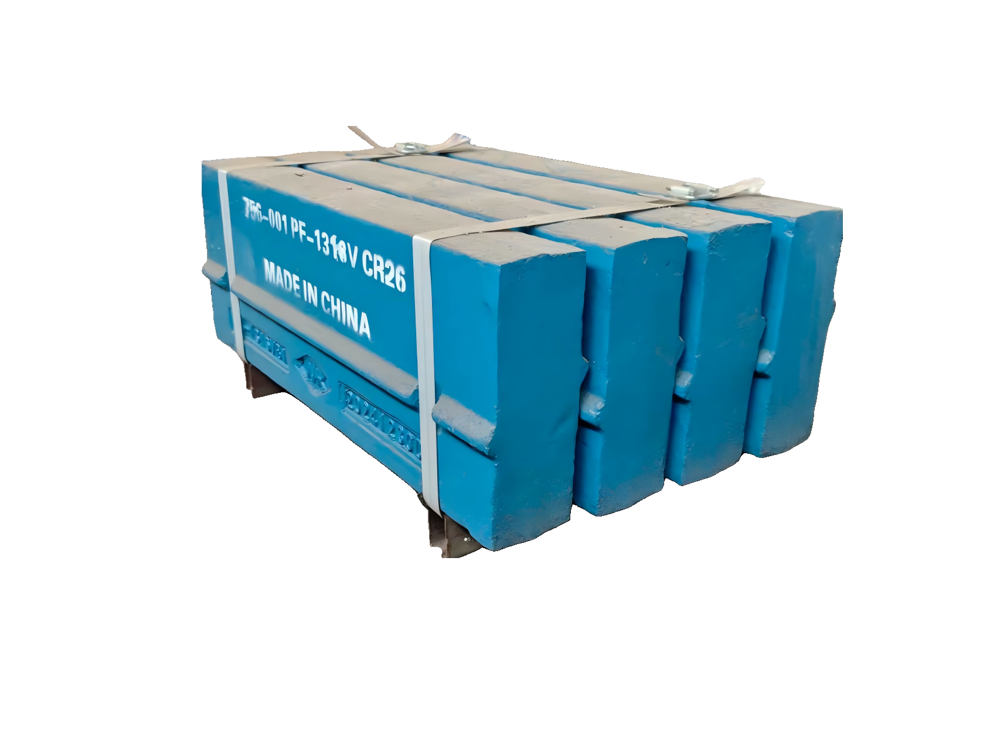

High-wear crushing zones
Jaw plates handle compression crushing, while VSI rotor parts work in high-speed impact and material acceleration zones.
Jaw / VSI
Jaw plates, cheek plates, VSI rotor tips, distributor plates and Barmac style wear parts for crushing and screening plants.

Jaw plates handle compression crushing, while VSI rotor parts work in high-speed impact and material acceleration zones.
Jaw plates require tooth profile, thickness and material confirmation. VSI parts require rotor model and mounting details.
Material choice depends on rock type, feed size, impact conditions and required service life.
When part numbers are missing, XCT can start RFQ confirmation from used-part photos and key dimensions.